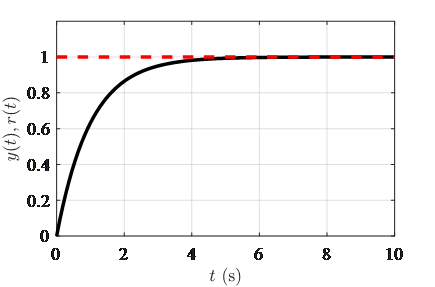
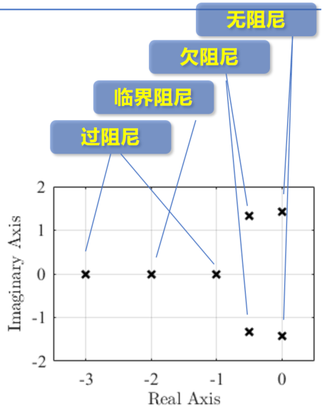

3.4 典型低阶系统的时域分析
本章主要介绍典型低阶控制系统的时域分析方法，重点讲解一阶系统和二阶系统的性能分析、阻尼比概念、额外极点和零点的影响，以及PID控制对系统性能的校正作用。
本章学习目标
- 掌握一阶系统的性能分析方法
- 理解二阶系统的四种类型及其特点
- 掌握阻尼比、自然频率、阻尼频率等关键概念
- 学会分析额外极点和零点对系统响应的影响
- 掌握高阶系统的近似分析方法
- 理解PID控制各环节对系统性能的影响
章节内容概述
3.4.1 一阶系统的性能分析
3.4.2 二阶系统的类型与标准形式
3.4.3 二阶系统的性能分析
3.4.4 额外极点/零点对系统响应的影响
3.4.5 高阶系统的近似分析
3.4.6 PID控制原理与应用
3.4.7 实践练习与小结
笔记说明：本笔记基于PPT内容整理，补充了必要的公式推导和解释说明，确保内容完整性。
3.4.1 一阶系统的性能分析
一阶系统传递函数的一般表达式
一阶系统的标准传递函数形式为：
其中：
- ：系统增益
- ：时间常数
阶跃响应的时域表达式
对于单位阶跃输入，系统的输出响应为：
时间常数的物理意义
时间常数：反映系统的响应速度，具有以下物理意义：
- 表示时刻，输出信号的斜率为
- 当时，输出达到稳态值的63.2%
- 当时，输出达到稳态值的95%
- 当时，输出达到稳态值的98.2%
一阶系统的性能指标
1. 调节时间
- ±5%误差带：
- ±2%误差带：
2. 上升时间
- 从10%到90%稳态值：
3. 时间常数与响应速度的关系
时间常数越小，系统响应速度越快。任意一阶响应可以通过尺度变换获得。

重要结论
- 一阶系统的动态性能完全由时间常数决定
- 越小，系统响应越快
- 所有一阶系统具有相似的响应形状，仅时间尺度不同
3.4.2 二阶系统的类型与标准形式
二阶系统的一般表示
二阶系统的标准传递函数形式为：
其中：
- ：自然频率（无阻尼自然频率）
- ：阻尼比
传递函数的三种表示形式
-
首一标准型：
-
零极点形式（zpk）：
其中
-
尾一标准型：
二阶系统的特征方程
特征方程：
特征根：
二阶系统的四种类型
根据阻尼比的取值，二阶系统可分为四种类型：
| 阻尼比 | 特征根 | 系统类型 | 响应特点 |
|---|---|---|---|
| 无阻尼系统 | 纯振荡，无衰减 | ||
| 一对共轭复根 | 欠阻尼系统 | 衰减振荡 | |
| 重实根 | 临界阻尼系统 | 最快无超调响应 | |
| 两个相异实根 | 过阻尼系统 | 缓慢无超调响应 |
阻尼比的物理意义
阻尼比：指数衰减率与周期振荡的比值，反映了系统的阻尼程度。
- ：无阻尼，纯振荡
- ：欠阻尼，衰减弱于振荡
- ：临界阻尼，衰减率与振荡频率一致
- ：过阻尼，衰减强于振荡
注意：阻尼比小于0表示系统不稳定（正反馈）。
3.4.3 二阶系统的性能分析
关键物理参数
- 自然频率：无阻尼时的振荡频率
- 阻尼频率：阻尼振荡频率
- 衰减系数：特征根的实部绝对值
- 阻尼角：
极点与物理参数的几何关系
对于欠阻尼系统（）：
- 极点位置：
- 几何关系：
- 极点到原点的距离：
- 极点与负实轴的夹角：
- 极点的实部：
- 极点的虚部：

二阶系统性能指标公式
欠阻尼系统（）
r$**：
-
峰值时间 ：
-
超调量 ：
-
调节时间 ：
- ±5%误差带：
- ±2%误差带：
过阻尼系统（）
过阻尼系统没有峰值时间和超调量，性能主要由调节时间和上升时间描述。
当两个实根比值大于4时（），快衰减模态占比小于20%，可近似为一阶系统：
其中是离虚轴较近的极点（模值较小）。
临界阻尼系统（）
临界阻尼系统也没有超调量，是最快的无超调响应：
性能指标与物理参数的关系
- 峰值时间：仅与阻尼频率有关
- 超调量：仅与阻尼比有关
- 调节时间：主要取决于衰减系数
- 上升时间：主要取决于阻尼频率
设计权衡
-
快速性与平稳性的矛盾：
- 减小和需要增大
- 减小需要增大
- 最佳折衷：（此时）
-
工程经验：
- 系统的最佳阻尼比为0.707，兼顾快速性与小超调
- 当时，
3.4.4 额外极点/零点对系统响应的影响
额外极点的影响
在原有系统基础上串联一个一阶惯性环节：
5倍经验法则
当额外极点的模值比主导极点大5倍以上时：
- 额外极点对应模态的系数与不考虑该极点时的差异在25%以内
- 在分析和设计时允许忽略该极点
- 但需要通过试验验证
物理意义：当极点A比极点B大5倍以上，则极点B所对应模态的系数与不考虑极点A时的差异在25%以内。
额外零点的影响
在原有系统基础上增加一个零点：
零点位置的影响
-
左半平面零点（）：
- 相当于构建了原系统的微分系统
- 系统输出为两个系统的并联
- 与原系统输出变化率成正比，加剧了变化程度
- 使响应更快，但可能增加超调
-
右半平面零点（）：
- 非最小相位系统
- 与原系统输出变化率成反比，与原系统"对着干"
- 可能导致响应初期反向
零点对暂态响应的影响规律
- 零点越靠近虚轴，影响越大
- 左半平面零点使响应加速，可能增加超调
- 右半平面零点可能导致非最小相位特性
3.4.5 高阶系统的近似分析
高阶系统的瞬态响应特性
高阶系统的瞬态响应是由一些一阶惯性环节和二阶振荡环节的响应函数叠加组成。
主导极点概念
主导极点：距虚轴最近的闭环极点。主导极点对系统响应起主要作用。
判断条件：当其他极点与主导极点的实部之比大于5时，可忽略非主导极点的影响。
偶极子概念
偶极子：某极点与对应零点之间的间距小于它们本身到原点距离的1/10时，即可认为是偶极子。
特性：
- 偶极子相消仅针对左半平面
- 右半平面的偶极子不能相消
- 偶极子对系统响应影响很小，可忽略
高阶系统降阶分析方法
- 识别主导极点：找到距虚轴最近的极点
- 检查非主导极点：应用5倍经验法则
- 检查偶极子：识别并处理偶极子
- 验证降阶结果：通过仿真验证降阶系统的准确性
工程经验
尽管可以降阶分析，但是还是要在原系统验证。设计人员的经验对于工程实践具有重要指导作用。
3.4.6 PID控制原理与应用
PID控制器的一般形式
PID控制器的传递函数为：
其中：
- ：比例增益
- ：积分增益
- ：微分增益
各控制环节的作用
1. 比例环节（P）
- 对稳定性的影响：比例增益存在稳定下限
- 对稳态误差的影响：比例增益越大，稳态误差越小
- 对动态性能的影响：
- 与自然频率正相关：增大提高
- 不影响衰减系数，即不影响调节时间
- 增大降低阻尼比，提高阻尼频率
- 使系统由过阻尼向欠阻尼变化，峰值时间降低，超调量增加
2. 微分环节（D）
- 对稳定性的影响：微分增益存在稳定下限
- 对稳态误差的影响：微分增益不影响稳态误差
- 对动态性能的影响：
- 与衰减系数的大小正相关：增大提高
- 不影响自然频率
- 与比例增益共同影响阻尼比
- 相当于引入额外的零点
3. 积分环节（I）
- 对稳定性的影响：积分增益存在稳定上限，过大会引起系统失稳
- 对稳态误差的影响：
- 积分环节提高了系统型别
- 积分增益越大，对应激励信号的稳态误差越小
- 对动态性能的影响：
- 增加了系统的阶数
- 引入了额外的极点与零点
PID控制器的设计考虑
稳定性约束
对于典型二阶系统：
-
比例控制：
- 特征方程：
- 稳定条件：，
-
比例-微分控制：
- 特征方程：
- 稳定条件：，
-
比例-积分控制：
- 特征方程：
- 稳定条件：劳斯判据确定和范围
-
比例-积分-微分控制：
- 特征方程：
- 稳定条件：劳斯判据确定、、范围
PID控制对系统性能的校正能力
-
比例控制：
- 可以校正稳态误差
- 无法校正响应速度
- 过高的比例增益会引起较大的超调
-
比例-微分控制：
- 可以校正稳态误差及响应速度
- 相当于引入额外的零点
-
比例-积分控制：
- 可以消除稳态误差（阶跃）/提高系统型别
- 积分环节增加了系统的阶数
-
比例-积分-微分控制：
- 可以视作比例-积分控制与比例-微分控制的并联
- 综合改善系统行为
工程最佳参数
最佳阻尼比：
- 此时超调量
- 兼顾快速性与小超调
- 阻尼角
3.4.7 实践练习与小结
练习 3.4.1：一阶系统分析
已知一阶系统的传递函数：
求：
- 系统的时间常数
- 调节时间（±5%误差带）
- 上升时间
- 单位阶跃响应的稳态值
解答：
- 时间常数 s
- 调节时间 s
- 上升时间 s
- 稳态值
练习 3.4.2：二阶系统类型判断
判断以下系统的阻尼比和类型：
解答：
- ， ⇒ ，欠阻尼系统
- ， ⇒ ，临界阻尼系统
- ， ⇒ ，临界阻尼系统
- ， ⇒ ，过阻尼系统
练习 3.4.3：二阶系统性能计算
已知二阶欠阻尼系统：
求：
- 自然频率和阻尼比
- 阻尼频率
- 上升时间
- 峰值时间
- 超调量
- 调节时间（±2%误差带）
解答：
- rad/s， ⇒
- rad/s
- rad
s - s
- s
练习 3.4.4：系统设计
设计要求：
- 单位阶跃响应的超调量
- 峰值时间 s
- 调节时间 s（±5%误差带）
求满足要求的和范围。
解答：
-
⇒
解得： -
s ⇒ ⇒
-
s ⇒ ⇒
综合：取，则：
- rad/s
- rad/s
取 rad/s可满足所有要求。
练习 3.4.5：额外极点影响分析
已知系统：
判断是否可以忽略极点的影响。
解答：
系统有三个极点：，，
主导极点为（离虚轴最近）
极点与主导极点的模值比为
根据5倍经验法则，可以忽略极点的影响。
降阶系统：
练习 3.4.6：PID控制器设计
已知受控对象：
采用PID控制器，要求：
- 系统稳定
- 单位阶跃响应的稳态误差为0
- 阻尼比
- 自然频率 rad/s
求控制器参数、、。
解答：
闭环系统特征方程：
-
稳态误差为0要求系统为I型以上，需要
-
期望特征方程：
其中，
设（远大于，可忽略影响）
期望特征方程： -
对比系数：
- ⇒
- ⇒
-
验证稳定性：劳斯判据
1 95.7 17.07 250 0 250 所有系数为正，第一列全正，系统稳定。
结论：，，
练习 3.4.7：综合设计
已知单位反馈系统结构如图所示：
R(s) → [K(s)] → [G(s)] → Y(s)
↑ (-)
└─────┘
其中，控制器。
设计要求：
- 系统稳定
- 单位斜坡输入的稳态误差
- 阻尼比
- 调节时间 s（±5%误差带）
求和的取值范围。
解答：
-
闭环传递函数：
-
特征方程：
稳定条件：， -
系统为I型，速度误差常数：
单位斜坡输入稳态误差： ⇒
-
特征方程与标准形式对比：
- ⇒
-
⇒ ⇒
-
⇒ ⇒
-
综合：
取，则：
- ，所以
- 取，则，满足要求
- s < 2 s，满足要求
结论：可取，
3.4.8 小结与总结
核心概念总结
一阶系统
- 时间常数：决定系统响应速度的关键参数
- 性能指标：（5%）/（2%），
- 特点：无超调，响应形状相似
二阶系统
- 自然频率：无阻尼振荡频率
- 阻尼比：衰减与振荡的比值，决定系统类型
- 阻尼频率：实际振荡频率
- 衰减系数：特征根实部绝对值
- 阻尼角：
系统类型
- 无阻尼：，纯振荡
- 欠阻尼：，衰减振荡
- 临界阻尼：，最快无超调
- 过阻尼：，缓慢无超调
性能指标公式（欠阻尼）
- （5%）/（2%）
重要方法总结
系统分析步骤
- 确定系统传递函数
- 计算自然频率和阻尼比
- 判断系统类型
- 根据类型选择相应公式计算性能指标
- 分析额外极点和零点的影响
高阶系统近似方法
- 主导极点法：5倍经验法则
- 偶极子相消：间距小于1/10距离
- 验证：在原系统验证降阶结果
PID控制器设计
- 比例环节：影响稳态误差和自然频率
- 微分环节：影响衰减系数和阻尼比
- 积分环节：提高系统型别，消除稳态误差
- 稳定性约束：各增益存在上下限
设计权衡与工程考虑
性能指标之间的矛盾
- 快速性与平稳性：减小和需要增大，减小需要增大
- 稳定性与精度：提高增益减小误差，但可能降低稳定性
- 响应速度与鲁棒性：快速响应系统对参数变化更敏感
工程最佳参数
- 最佳阻尼比：
- 超调量：
- 设计目标：兼顾快速性与小超调
经验法则
- 5倍经验：额外极点模值大于主导极点5倍时可忽略
- 偶极子：极零点间距小于1/10距离时可相消
- 过阻尼近似：实根比值大于4时可近似为一阶系统
关键公式回顾
一阶系统
- 传递函数：
- 阶跃响应：
- 性能指标：/，
二阶系统
- 标准形式：
- 特征根：
- 阻尼频率：
- 衰减系数：
- 阻尼角：
性能指标
- （5%）/（2%）
工程应用价值
- 系统设计：根据性能要求确定系统结构和参数
- 控制器整定：调整PID参数满足性能指标
- 性能评估：分析现有系统的稳态和动态性能
- 系统改进：识别性能瓶颈并采取改进措施
- 鲁棒性分析：分析参数变化对性能的影响
常见错误与注意事项
- 公式适用条件：性能指标公式仅适用于特定类型系统
- 稳定性前提：所有分析基于稳定系统
- 近似条件：5倍经验和偶极子相消需要验证
- 设计矛盾：注意稳定性、精度、快速性、平稳性之间的矛盾
- 参数单位：注意时间单位的一致性（秒、毫秒等）
- 系统类型判断：正确识别积分环节个数和阻尼比
- PID参数整定：各增益存在相互影响，需要综合考虑
学习建议
- 理论与实践结合：通过仿真验证理论分析结果
- 多做练习：通过大量练习掌握各种类型系统的分析方法
- 理解物理意义：不仅记住公式，更要理解参数的物理意义
- 工程思维：培养工程实践中的权衡和折衷思维
- 系统思维：从整体角度理解各环节的相互影响